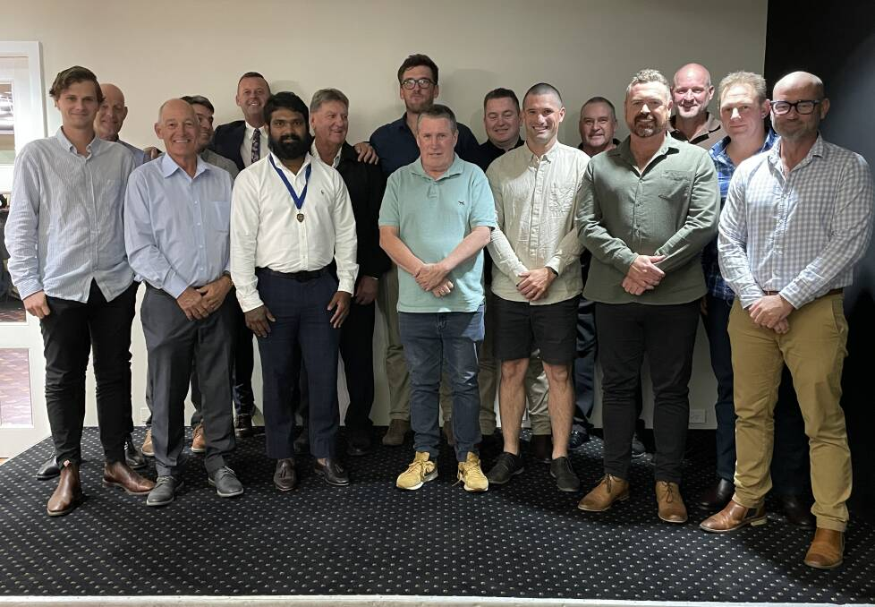

Our Mission
To foster community wellness, discipline, and teamwork by providing affordable and accessible sporting opportunities for all ages.

Building community through sport, teamwork and discipline.
Glen Austin Sports Club was established in 2018 in Glen Austin, Gauteng.
The club began as a small community initiative designed to give local youth access to organised sport.
The club has grown to offer six sports codes and has more than 200 active members participating in weekly training sessions and weekend fixtures.
To foster community wellness, discipline, and teamwork by providing affordable and accessible sporting opportunities for all ages.
To be the most inclusive and competitive community sports club in Midrand, known for developing talent and building future leaders through sport.
Glen Austin Sports Club is aimed at community members aged approximately 8–35 in Glen Austin and surrounding areas.
This includes school learners, university students and working adults interested in Soccer, Netball, Basketball, Cricket and Athletics.
Find out how you can participate or support the club.
Join Us